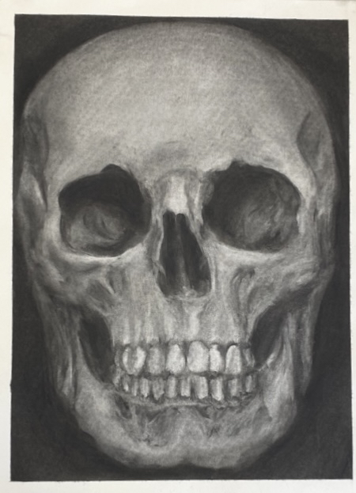
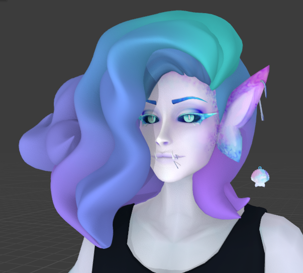
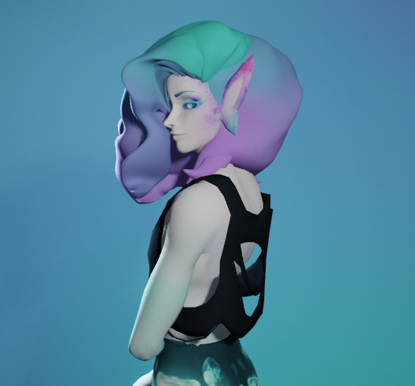
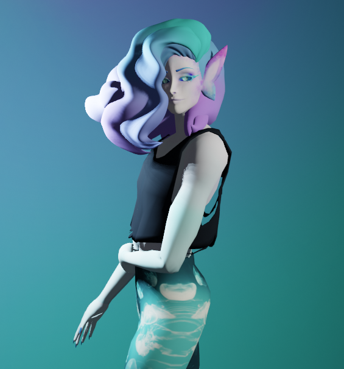
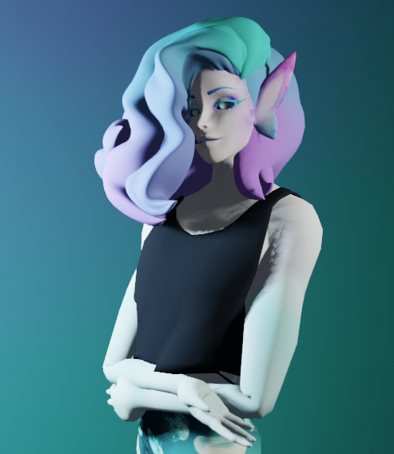
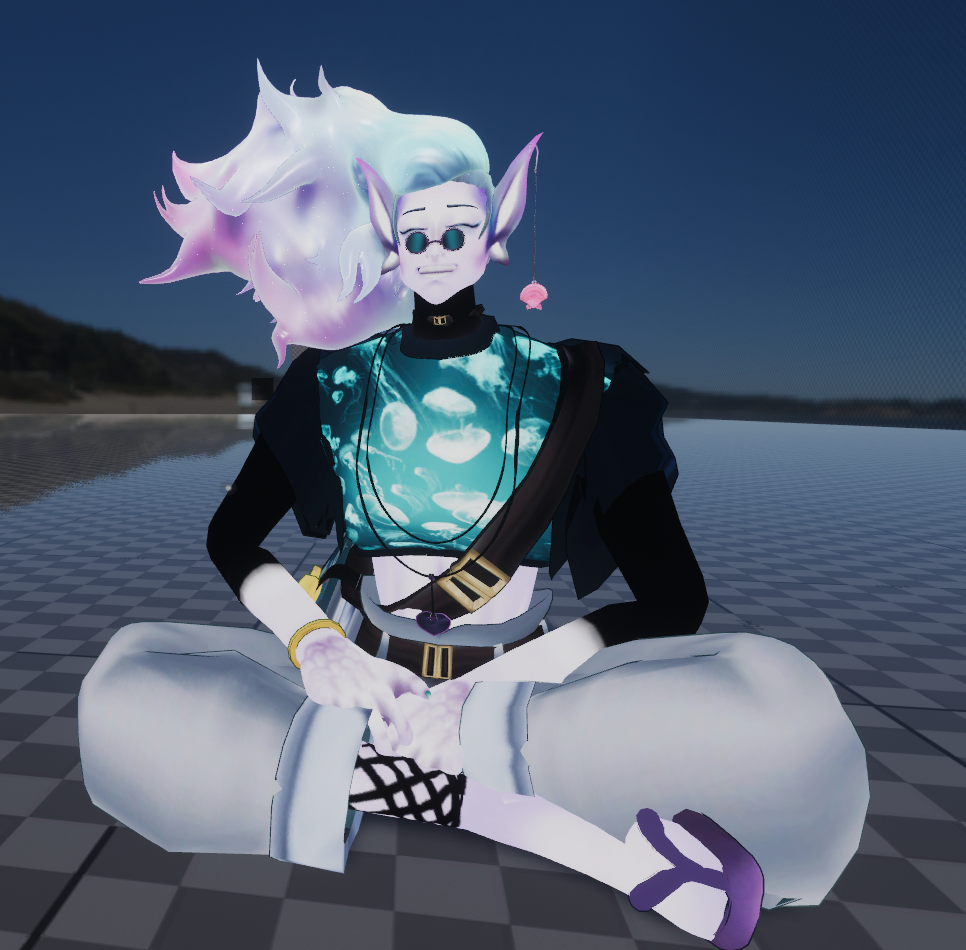
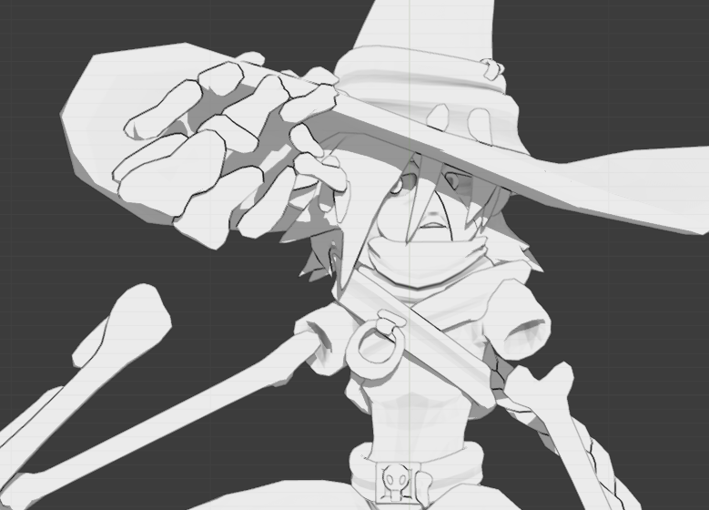
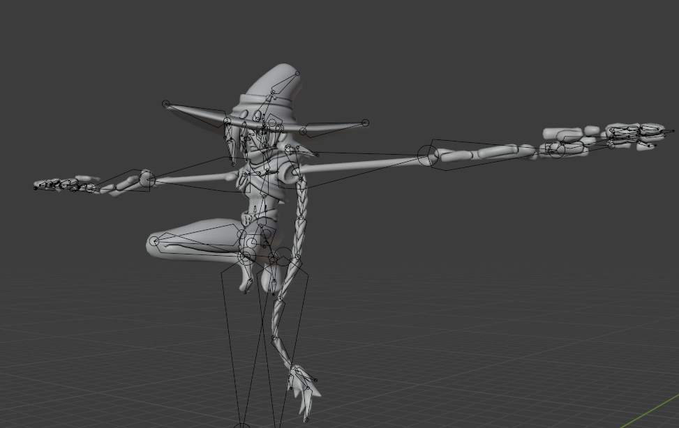
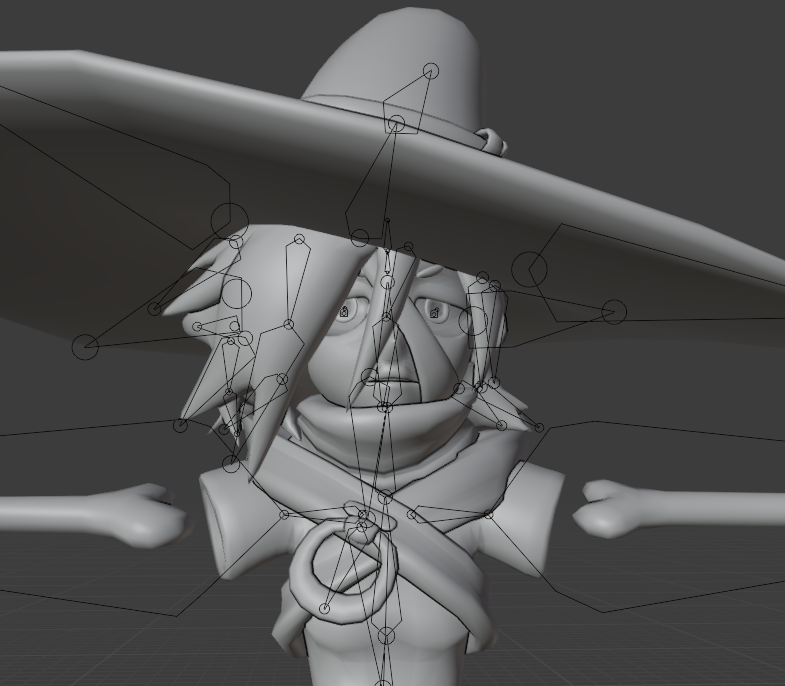
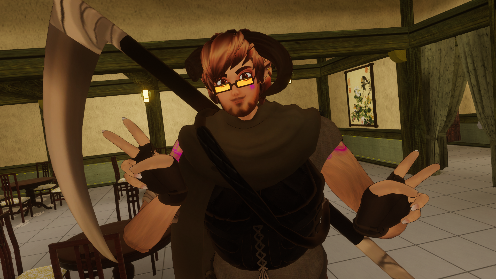

ART 3: Collage assignment inspired by the works of Nam June Paik.

ART 24: A 17x14 charcoal drawing displaying use of value, form and referencing still life.

Personal: An original character modeled, rigged, textured, posed and rendered in Blender. The rig reflects the requirements of VR software to efficiently upload it to be used as an avatar.

An early version of the same character, displayed in VR.

Another character modeled, rigged and posed in Blender. The rig reflects the requirements of VR software to efficiently upload it to be used as an avatar.

Another original character displayed in VR.